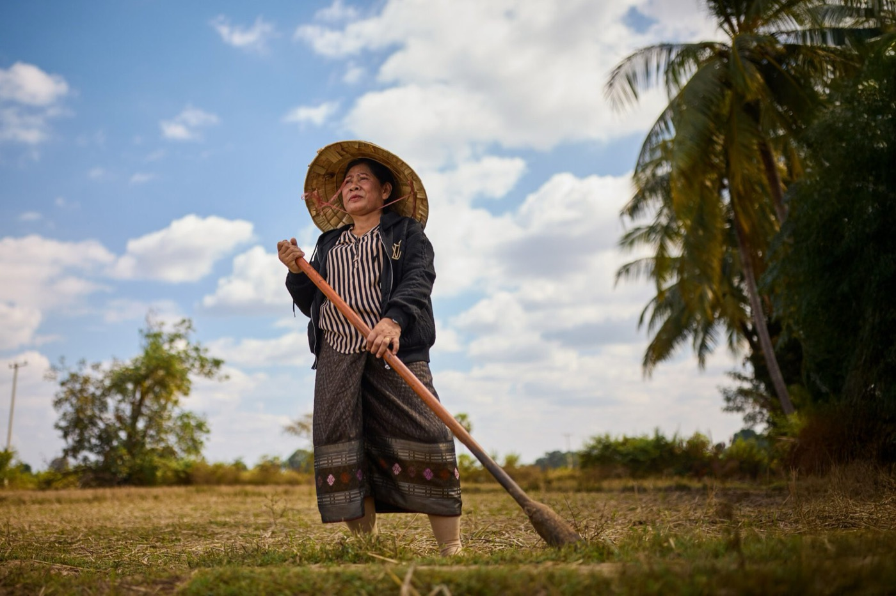
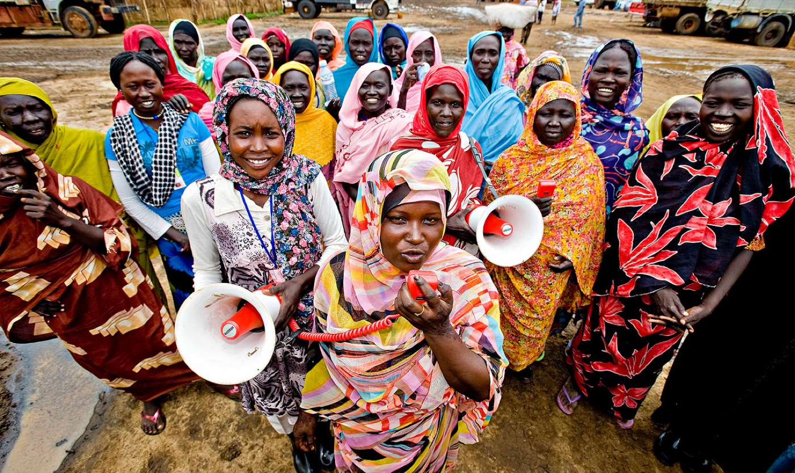
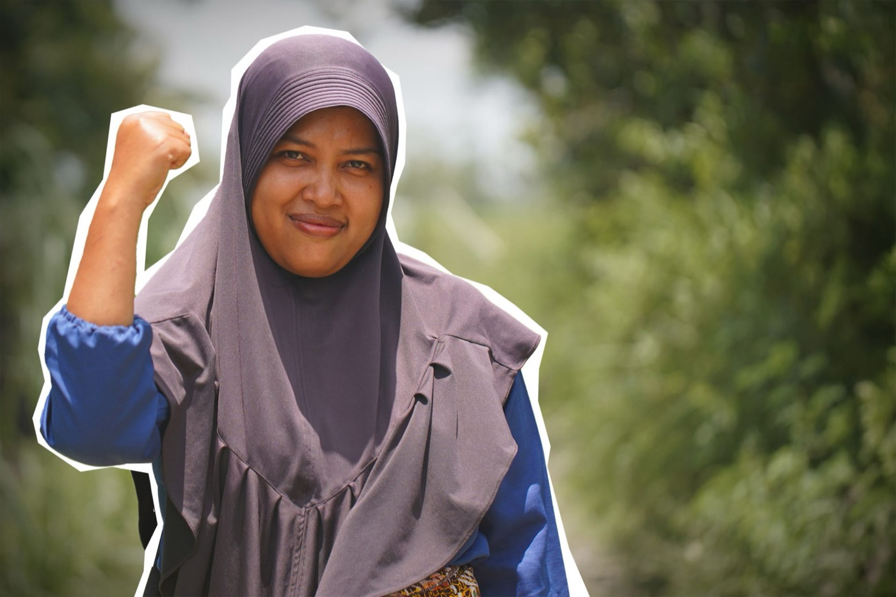
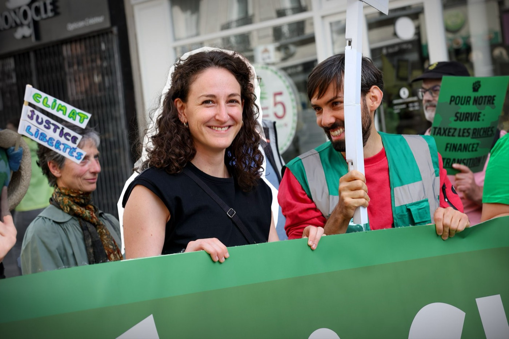
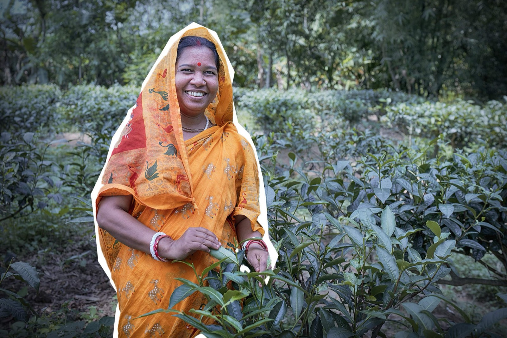

La souffrance est immense. C'est pendant les guerres et les urgences que les organisations comme la nôtre révèlent leur véritable raison d'être.
FS
Fidaa ShurrabDirectrice de projets, Gaza
avant la clôture de la déduction fiscale
J'agis, je fais un donDepuis 1988, Oxfam France lutte contre les injustices et la pauvreté, sur le terrain comme auprès des décideurs.

Enquêtes et campagnes pour que les multinationales polluantes et les 1 % les plus riches financent la transition écologique.

Eau potable, nourriture et abris pour les populations touchées par les conflits et les catastrophes, comme à Gaza ou au Sahel.

Plaidoyer pour l'égalité salariale, les droits des femmes et contre les violences sexistes, en France et dans le monde.

Pour la taxation des ultra-riches et la fin de l'évasion fiscale qui prive les services publics de milliards d'euros.
Choisissez un montant : il sera automatiquement reporté dans le formulaire sécurisé ci‑dessous.
Ou choisissez un montant libre directement dans le formulaire.
66 % de votre don est déductible de votre impôt sur le revenu, dans la limite de 20 % de votre revenu imposable. Faites le calcul :
Don versé avant le 31 décembre à 23 h 59 · Reçu fiscal envoyé automatiquement par e‑mail en début d'année.
Votre générosité mérite une transparence totale.
Transaction chiffrée SSL via la plateforme iRaiser, certifiée pour les grandes ONG.
66 % de votre don est déductible de vos impôts. Reçu envoyé automatiquement par e‑mail.
Don mensuel modifiable ou résiliable à tout moment, en un e‑mail ou un appel.
Comptes contrôlés et publiés chaque année, en toute transparence.
Celles et ceux qui portent nos actions en parlent mieux que nous.
La souffrance est immense. C'est pendant les guerres et les urgences que les organisations comme la nôtre révèlent leur véritable raison d'être.
Nous plaçons la participation citoyenne au cœur de nos programmes, en donnant toute leur place aux jeunes et aux femmes.
Chez Oxfam, on s'attaque aux causes profondes des inégalités, pas seulement aux symptômes. C'est ce qui m'a donné envie de m'engager.

Votre don devient une pression réelle sur les puissants et une aide vitale pour les plus vulnérables. Agissez avant le 31 décembre.
Je fais un don